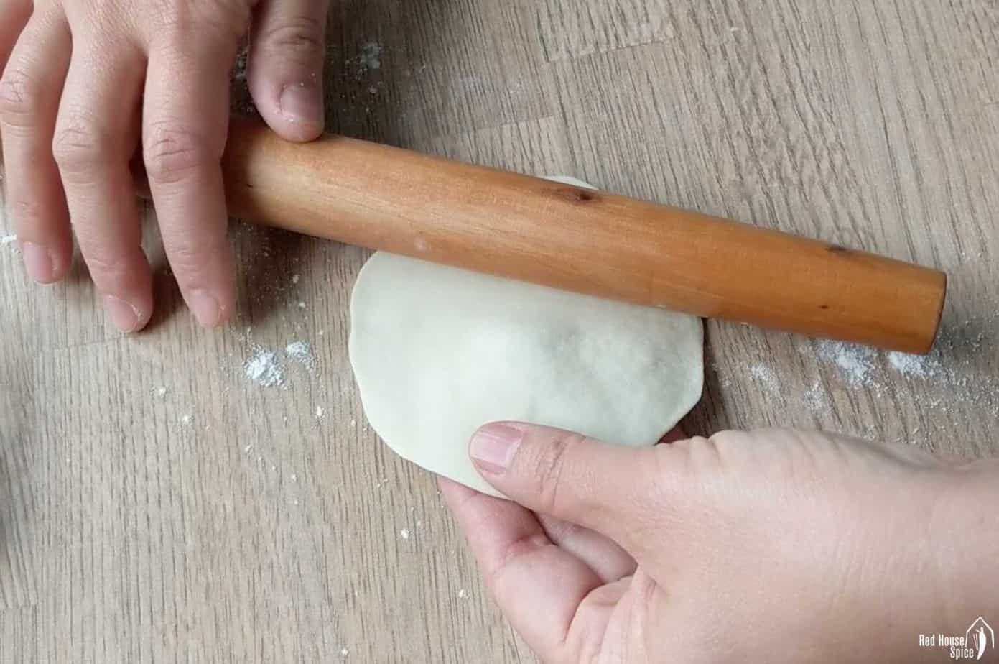
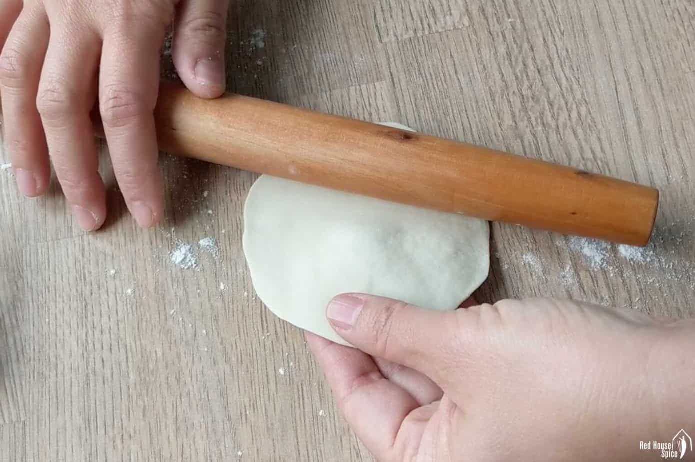

Recipes
Double Chocolate Cookies
Origin: Michigan Source: Family Recipe Category: Dessert
My daughter learned to make these cookies at a baking camp at Zingermanns and has tweaked the recipe to fit the taste buds of her siblings. They are extremely sugary so the salt helps to balance it. Note, these cookies are best eaten very quickly.
Recipe Ingredients
- Unsalted butter
- Granulated Sugar
- Packed light or dark brown sugar
- Large egg
- Pure vanilla extract
- Semi-sweet chocolate chunks (melted)
- All-purpose flour
- Natural unsweetened cocoa powder
- Baking soda
- Salt
- Semi-sweet chocolate chunks
Recipe Steps
- In a mixing bowl cream together the butter, granulated sugar, and brown sugar
- Add the egg and vanilla extract and beat well
- Add the melted chocolate
- In a separate bowl combine the flour, baking soda, cocoa powder and salt
- Combine the wet and dry ingredients
- Add the unmelted chocolate chunks.
- Form 15 cookies and place on a baking sheet.
- Cook for 12 to 13 minutes at 350 degrees.
Additional Food images


Chinese Hot and Sour Soup
Origin: China Source: Family Recipe Category: Soup
Chinese Hot and Sour Soup (酸辣汤) is a popular and flavorful soup known for its spicy and tangy taste. It's made with a variety of ingredients including tofu, mushrooms, and bamboo shoots.
Recipe Ingredients
- Tofu
- Mushrooms
- Water
- Pork
- Bamboo shoots
- Soy sauce
Recipe Steps
- Boiling
- Simmer
- Cooking
- Dipping sauces
Additional Food images


Homemade Mac & Cheese
Origin: Northern Europpe Source: https://www.delish.com/cooking/recipe-ideas/a44763401/mac-and-cheese-recipe/ Category: Main dish
Macaroni and cheese, commonly known as mac & cheese, is a comfort food staple that has captured the hearts of people all over the world. Originating from Europe and popularized in the United States, this dish consists of elbow macaroni pasta smothered in a creamy cheese sauce. The simplicity of its ingredients—pasta, cheese, and often a touch of butter or milk—belies a rich, complex flavor that has made it a favorite for both quick weeknight dinners and festive holiday gatherings.
- Macaroni
- Butter
- Flour
- Cheese
- Seasonings
- Bread crumbs
Recipe Steps
- Preheat oven to 375°. Grease a 13"x9" baking dish with butter. In a large pot of boiling salted water, cook macaroni, stirring occasionally, until al dente, 5 to 6 minutes. Drain.
- In a large saucepan over medium heat, melt 1 stick butter. Sprinkle flour over and cook, stirring, until slightly golden, 2 to 3 minutes. Pour in milk and whisk until combined. Add mustard powder; season with salt and pepper. Bring to a simmer over medium-high heat and cook, stirring, until sauce starts to thicken, about 2 minutes.
- Remove pan from heat and whisk in cheddar, Gruyère, and 1 cup Parmesan until melted and smooth. Stir in macaroni and transfer to the prepared dish.
- In a small bowl, combine panko, oil, and remaining 1/2 cup Parmesan. Sprinkle over macaroni; season with more pepper.
- Bake mac and cheese until bubbly and golden, 25 to 30 minutes. Let cool for 10 minutes.
Additional Food images


Chinese Jiaozi
Origin: China Source: Family Recipe Category: Main dish
Chinese dumplings (Jiaozi, 饺子) are stuffed parcels made of unleavened dough and savory fillings consisting of minced ingredients like meat, egg, tofu, or vegetables. They can be boiled, pan-fried or steamed.
- Flour
- Water
- Prok
- Cabbage
Recipe Steps
- Dough
- Filling
- Folding
- Cooking
- Dipping sauces
Additional Food images

 

Chicken Curry
Origin: Japan Source: Family Recipe Category: Main dish
Unlike Indian or Thai curry, Japanese curry is more savory than spicy. It's an exemplary comfort food and one of the most-loved home-cooked dishes in Japan.
- Skinless, boneless chicken breast
- 1 tablespoon olive oil
- 1 pinch salt and ground black pepper
- Water
- 1 package of curry sauce mix
- 1 can of peas
- 5 potatoes, halved
- 1 package sliced cremini mushrooms
- 2 medium carrots, chopped
- 1 medium onion, chopped
- 2 cups jasmine rice
Recipe Steps
- Place chicken in a large, deep skillet. Drizzle with olive oil and season with salt and pepper on both sides. Add 1/3 cup water to the pan, cover, and cook over medium heat until no longer pink in the center and the juices run clear, about 20 minutes.
- While chicken is cooking, pour 2 cups water into a microwave-safe bowl. Break curry sauce mix into pieces and add to water. Heat in the microwave on high for 3 1/2 minutes; remove and stir until sauce mix has completely dissolved.
- Remove chicken from the skillet. Cut into cubes, return to the skillet, and pour curry sauce over top. Stir in peas, potatoes, mushrooms, carrots, and onion. Bring to a boil, then lower heat and simmer until vegetables are tender, about 30 minutes.
- Meanwhile, bring remaining water and rice to a boil in a saucepan. Reduce heat to medium-low, cover, and simmer until rice is tender and water has been absorbed, 20 to 25 minutes.
- Scoop rice into bowls and serve curry on top.
Additional Food images